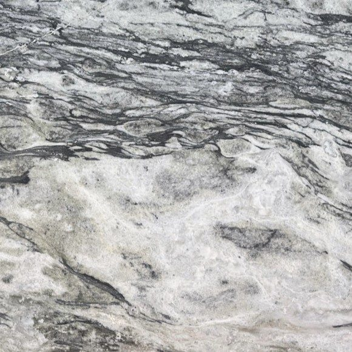
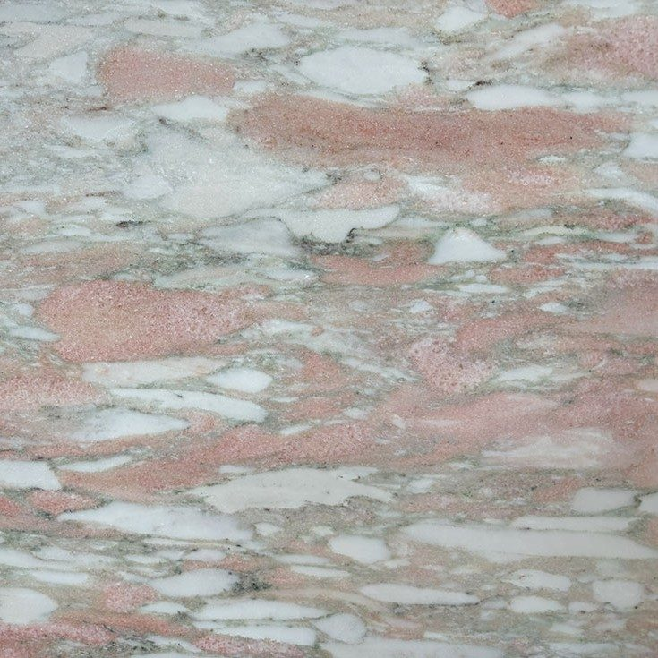
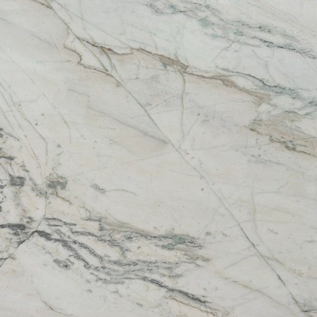
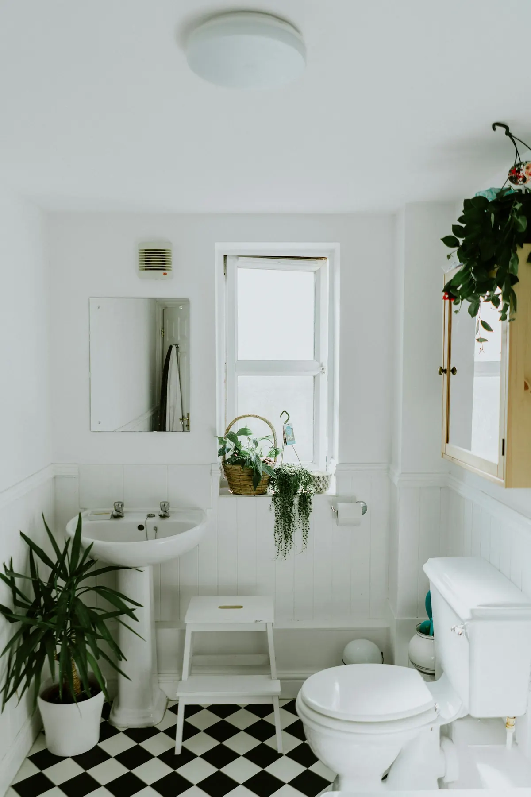

Cosentino — traitement Texta
Marbre Texta : trois marbres d'exception, mieux armés contre les taches
Le marbre Texta s'adresse aux projets qui veulent un marbre d'exception tout en limitant le risque de taches. Cosentino a sélectionné trois marbres pour la finesse de leur grain et la richesse de leurs veines, puis les a traités en surface. Nous assurons le façonnage de plans et de vasques en marbre Texta sur mesure dans notre usine de Mafra.
Le plan de travail Marbre Texta
Le Marbre Texta est une collection exclusive de marbres haut de gamme choisis pour la finesse de leur grain et la richesse de leurs veinages. Roche métamorphique issue du calcaire et sensible aux acides, le marbre reçoit un traitement de surface qui améliore sa résistance aux taches.
Marbre Texta
- Adouci
- Cuir
- Poli
- Épaisseurs 20 mm / 30 mm
- Dureté Mohs
- 3–4
- Anti-taches
- Traité
- Épaisseurs
- 20 / 30 mm
- Coloris
- 3
Finitions et formats
- Adouci
- Cuir
- Poli
- 20 mm · 30 mm
Coloris Marbre Texta
3 coloris disponibles, à voir aussi en vrai dans notre usine de Mafra sur rendez-vous.

Lunar WhiteAdouci · Cuir · PoliBlanc lunaire aux veines gris tendre.
Rose BescatoAdouci · Cuir · PoliRose saumon aux fragments blancs et crème.
VenanoAdouci · Cuir · PoliBlanc veiné de gris aux lignes fluides.
Ambiances

Marbre TextaAmbiance cuisine 
Marbre TextaAmbiance salle de bain
Pourquoi prescrire le marbre Texta
Le marbre Texta répond à une hésitation fréquente chez le client final : il adore le marbre, mais redoute la première tache de café. Le traitement de surface appliqué par Cosentino améliore nettement sa résistance aux taches, ce qui le rend plus serein au quotidien qu'un marbre brut.
Il faut rester clair pour autant : le traitement ne transforme pas la nature de la pierre. Le marbre Texta reste une roche métamorphique issue du calcaire, de dureté Mohs 3 à 4, sensible aux acides et aux rayures. Le citron, le vinaigre ou un produit anticalcaire peuvent toujours le ternir.
Il trouve donc idéalement sa place en salle de bains, sur une table, une console, une crédence ou un îlot de réception, et en cuisine pour qui accepte quelques précautions. Nous le façonnons en 20 ou 30 mm, avec découpes et perçages d'après vos plans.
Lunar White, Rose Bescato ou Venano
La collection compte trois marbres, chacun avec une personnalité très marquée.
- Lunar White : un blanc lunaire aux veines gris tendre, lumineux et apaisant, parfait pour une salle de bains claire ou une cuisine blanche.
- Venano : un blanc veiné de gris aux lignes fluides, plus graphique, qui met en valeur un îlot ou un grand plan vasque.
- Rose Bescato : un rose saumon aux fragments blancs et crème, pour une pièce chaleureuse et singulière, superbe avec le laiton.
Chaque marbre se décline en adouci, cuir ou poli, en 20 ou 30 mm. En cuisine, l'adouci ou le cuir dissimulent mieux les éventuelles marques d'acide que le poli. En salle de bains ou sur une table, le poli révèle toute la profondeur des veines. La visite de l'usine sur rendez-vous permet de voir les dalles.
Vos questions
Le marbre Texta craint-il toujours le citron ?
Oui. Le traitement Texta améliore la résistance aux taches, c'est-à-dire la pénétration des liquides colorés, mais il ne rend pas le marbre insensible aux acides. Un jus de citron, du vinaigre ou un anticalcaire peuvent laisser une marque mate sur la surface. À transmettre au client : essuyer rapidement ces liquides et nettoyer avec un savon doux à pH neutre.
Peut-on faire un plan vasque en marbre Texta ?
C'est l'un de ses meilleurs usages. En salle de bains, le marbre est moins soumis aux acides alimentaires et aux chocs, et le traitement Texta limite les auréoles de cosmétiques. Nous façonnons le plan sur mesure avec les découpes de vasque et les perçages de robinetterie indiqués sur vos plans, en 20 ou 30 mm. Des nettoyants doux sont préférables aux anticalcaires acides.
Envoyez-nous vos plans
Plans cotés, fichiers techniques, matériau et finitions : nous étudions votre demande et vous répondons sous 48 heures ouvrées.